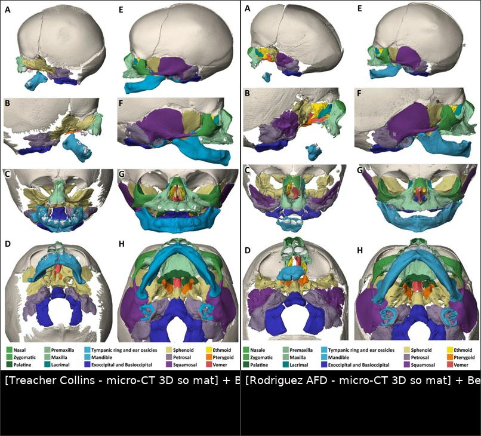
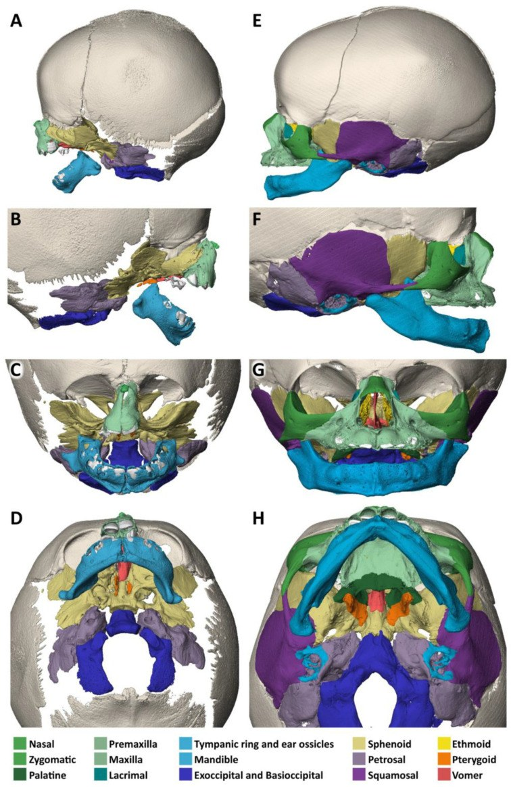
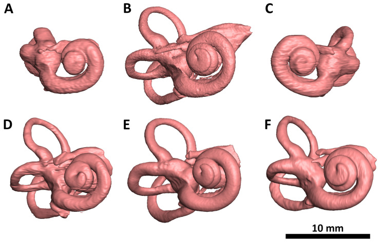
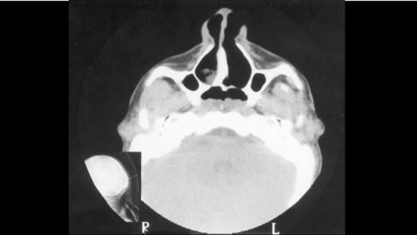
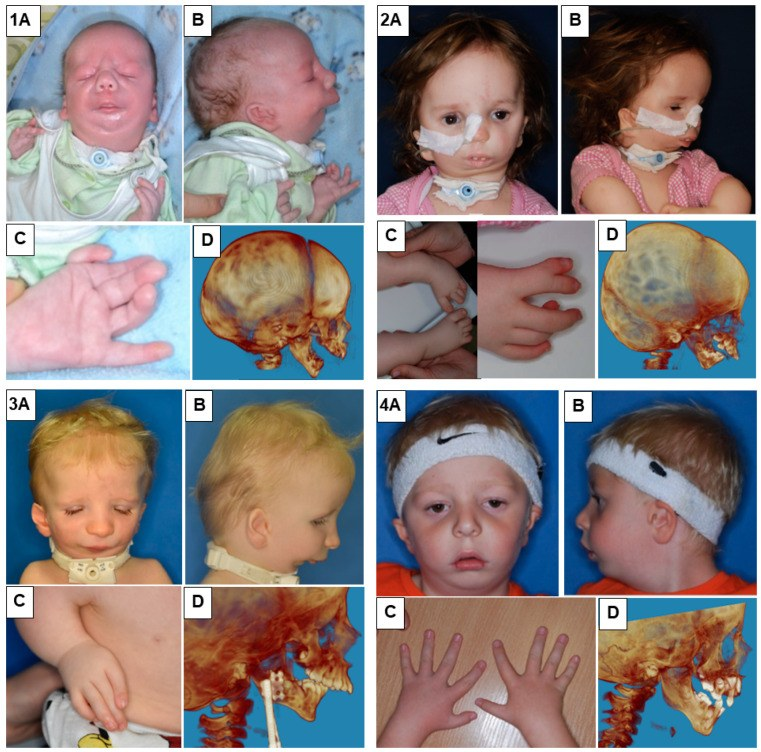

695 — Hội chứng Treacher Collins & Nager: hình ảnh sọ mặt – tai, đường thở và tư vấn di truyền / Treacher Collins syndrome & Nager syndrome
Tags: pattern:thieu-san-xuong-mat vung:so-mat vung:tai protocol:CT-xuong-mat protocol:PSG anatomy:so-mat
Mức chắc chắn (certainty): tổng hợp y văn (literature synthesis) — bài tổng hợp từ y văn mở (báo ca, nghiên cứu CBCT, tiêu bản micro-CT), số liệu đọc trực tiếp từ bài gốc, PMCID ghi trong sources.md; chưa gắn một ca nguyên văn duy nhất của nhóm.
Bài này nối tiếp 603 (Pierre Robin – tắc nghẽn đường thở trên) và 692 (dị tật vành tai – microtia). 603 trả lời “khối chèn ép nào làm tắc đường thở”; 692 trả lời “vành tai bất thường thì mổ tạo hình thế nào”. Bài này trả lời câu hỏi đọc phim của bác sĩ CĐHA: khi một trẻ có hai bên xương gò má – hàm dưới kém phát triển, cần mô tả gì trên CT, phân biệt với hội chứng nào, và vì sao phải khám tai + đường thở ngay từ sơ sinh.
1. Tổng quan bệnh học – cơ chế hình ảnh
- Bản chất phôi thai: cả Treacher Collins (TCS, mandibulofacial dysostosis) và Nager (acrofacial dysostosis) là bệnh của cung mang thứ nhất – thứ hai và tế bào mào thần kinh sọ. Tổn thương cốt lõi là chết tế bào mào thần kinh quá mức ở phần trên của ống thần kinh → thiếu nguyên liệu tạo xương gò má, xương hàm trên bên, xương hàm dưới và các thành phần tai ngoài – tai giữa (Behunova 2025, PMC12292342). Vì vậy tổn thương đối xứng, hai bên và không có loạn sản bao xương như u/xơ lành.
- TẠI SAO phải mô tả bằng CT xương (không phải phim sọ nghiêng): thiểu sản gò má – hàm dưới là khiếm khuyết mô xương ba chiều; phim sọ nghiêng chỉ cho hình chiếu chồng, còn CT dựng 3D cho thấy xương gò má mất hoàn toàn hay chỉ còn một mảnh, và có giúp lập kế hoạch tạo hình hay không. Tiêu bản micro-CT của TCS trong ảnh dưới cho thấy mất xương gò má và phần lớn xương hàm trên bên, góc hàm và mỏm lồi cầu biến dạng, xương bướm phát triển bất thường và dính vào xương sàng – xương lệ – xương vảy (Behunova 2025).
- **TẠI SAO nghe kém dẫn truyền lại là “hình ảnh”: ** ốc tai và tai giữa phát triển từ cùng vùng cung mang; trên micro-CT, ốc tai của tiêu bản TCS thiểu sản, các vòng dính cục (“clumped”), khác với ốc tai phát triển bình thường ở tiêu bản đối chứng (Behunova 2025, Fig. 4). Đây là cơ sở để giải thích nghe kém dẫn truyền/nghe kém hỗn hợp và chỉ định CT xương đá trước khi cân nhắc cấy ốc tai.
- Dịch tễ – gen (số chốt):
- TCS: 1/40.000 – 1/70.000 trẻ sinh sống (Andrade 2005, PMC9443590; bài này cũng nêu 1/50.000), di truyền trội nhiễm sắc thể thường, biểu hiện biến thiên rộng.
- TCOF1 chiếm 78–93% ca TCS; POLR1D và POLR1B khoảng 8%; thể lặn do POLR1C (TCS 3) hiếm (Behunova 2025).
- Nager: 3/1.000.000 trẻ sinh sống, y văn chỉ mô tả khoảng 100 ca; phần lớn do SF3B4 (spliceosomopathy) (Marszałek-Kruk 2023, PMC10815867).
- Tần suất dấu hiệu lâm sàng của TCS (Andrade 2005): mắt xếch xuống 89%, thiểu sản gò má 81%, thiểu sản hàm dưới 78%, dị tật vành tai 77%; hở mi dưới (coloboma), hẹp ống tai ngoài, hở vòm miệng và nghe kém dẫn truyền là các dấu hiệu đi kèm.
- Đường thở – vì sao không được bỏ qua: hẹp đường thở do hàm dưới lùi và hẹp sọ mặt gây ngưng thở khi ngủ do tắc nghẽn (OSA). Ở 20 người lớn TCS, 44,4% có OSA trên đa ký giấc ngủ, AHI trung vị 3,8 sự kiện/giờ (tối đa 77,5), ngáy 75%, nghẹt mũi 70% (Fidélis-da Silva 2023, PMC10325840). Đây là lý do PSG là một phần của hồ sơ hình ảnh chức năng, không chỉ CT.
- Đường thở thay đổi theo tuổi (số đo 3D): trên CBCT, nhóm TCS vị thành niên có thể tích đường thở hầu 9,13 ± 1,74 cm³, tăng lên 15,96 ± 6,07 cm³ ở người lớn TCS (+74,8%); người lớn TCS gần bằng nhóm chứng 16,31 ± 3,14 cm³ dù vẫn nhỏ hơn về trị tuyệt đối ở một số biến số. Diện tích mặt cắt tối thiểu hầu miệng 69,07 mm² (vị thành niên) so với 106,28 mm² (chứng) (dos Inocentes 2024, PMC11221962). Hệ quả thực hành: trẻ nhỏ/vị thành niên là nhóm hẹp nhất — nguy cơ OSA và nguy cơ khó đặt nội khí quản cao nhất, không phải người lớn.
2. Mẫu hình + chẩn đoán phân biệt theo vị trí (gamut)
- Vị trí 1 – gò má/ổ mắt: thiểu sản/mất xương gò má hai bên → TCS, Nager, AFD Rodriguez, loạn sản sọ mặt do Tessier 6–8, hemifacial microsomia/Goldenhar (một bên).
- Vị trí 2 – hàm dưới: vi hàm – lùi hàm hai bên → TCS, Nager, Pierre Robin đơn thuần (không có thiểu sản gò má), dính khớp thái dương – hàm bẩm sinh, loạn sản sụn.
- Vị trí 3 – tai: microtia, hẹp/teo ống tai ngoài, bất thường xương con → TCS/Nager (hai bên, đối xứng), teo ống tai đơn thuần, branchio-oto-renal, cholesteatoma bẩm sinh (một bên, có khối mô mềm).
- Vị trí 4 – đường thở: hẹp mũi sau, lưỡi tụt ra sau, hẹp hầu → TCS, Pierre Robin, teo mũi sau (choanal atresia), mềm sụn thanh quản (bài 694).
- Mnemonic “1-2-3-4” của TCS: 1 (cung mang 1) → gò má + hàm dưới; 2 (cung mang 2) → vành tai + xương con; 3 (ba tầng mô: da – sụn – xương) cùng thiểu sản; 4 (bốn dấu hiệu mắt: mắt xếch xuống, hở mi dưới, thiếu lông mi trong, coloboma).
- Khác biệt then chốt TCS vs Nager: Nager có dị tật chi trước trục (ngón cái thiểu sản/không có, cong ngón, thiếu xương quay) — không bao giờ có trong TCS; ngược lại TCS mới có hở mi dưới + lông mi trong thiếu điển hình.
3. Bảng so sánh phân biệt (ma trận đối chiếu)
| Thực thể (entity) | Hình ảnh điển hình (CT/CBCT) | Chốt vào (rule-in) | Chốt loại (rule-out) | Gợi ý xác nhận |
|---|---|---|---|---|
| Treacher Collins (TCS) | Mất/thiểu sản xương gò má hai bên, đối xứng; hàm dưới nhỏ – lùi; ống tai ngoài hẹp/teo; xương bướm – sàng dính bất thường | Thiểu sản gò má hai bên + hở mi dưới + vành tai bất thường, KHÔNG có dị tật chi | Có dị tật ngón cái/xương quay → nghĩ Nager; một bên → nghĩ Goldenhar | CT sọ mặt ≤ 1 mm + 3D; TCOF1/POLR1D/POLR1B |
| Nager (AFD) | Thiểu sản gò má + hàm dưới kèm dị tật chi trước trục (ngón cái thiểu sản/không có, thiếu xương quay); dính khớp thái dương – hàm | Thiểu sản sọ mặt hai bên + bất thường ngón cái/xương quay | Bàn tay – cẳng tay bình thường → nghĩ TCS | X-quang bàn tay – cẳng tay; SF3B4 |
| AFD Rodriguez | Khiếm khuyết rộng hơn: thiếu xương gò má + hàm trên bên + hàm dưới thô sơ; dị tật chi nặng (phocomelia) | Khiếm khuyết sọ mặt lan rộng + dị tật chi nặng | Chỉ hẹp ở gò má – hàm dưới → TCS | Micro-CT/CT 3D toàn thân; di truyền |
| Pierre Robin đơn thuần | Hàm dưới nhỏ – lùi, gò má BÌNH THƯỜNG, không hẹp ống tai | Vi hàm – lùi hàm đơn độc + hở vòm miệng | Có thiểu sản gò má/teo ống tai → không phải PR đơn thuần | Đo góc sọ mặt; PSG; đánh giá đường thở |
| Goldenhar / hemifacial microsomia | Thiểu sản MỘT BÊN gò má – hàm dưới – vành tai; có thể kèm u bì mắt, đốt sống cổ | Bất đối xứng rõ, một bên | Hai bên đối xứng → TCS/Nager | CT 3D; X-quang cột sống cổ |
| Teo mũi sau (choanal atresia) | Mảnh xương/màng bít cửa sau mũi, một hoặc hai bên; có thể kèm TCS | Tắc hoàn toàn một bên/hai bên trên lát cắt trục mũi sau | Cửa sau mũi thông thoáng → loại trừ | CT lát mỏng trục; nội soi mũi |

Trái: TCS — mất xương gò má và phần lớn hàm trên bên, góc hàm và mỏm lồi cầu biến dạng. Phải: AFD Rodriguez — khiếm khuyết lan rộng hơn, hàm dưới thô sơ. Xương từng chiếc được tô màu để đối chiếu. Nguồn: Behunova J et al., Biology 2025 (PMC12292342, Fig. 3 và Fig. 6), CC BY 4.0. Ảnh ghép letterbox, giữ nguyên tỷ lệ.Ba dấu hiệu cần đo trên CT (đừng chỉ “mô tả chung”)
- Xương gò má: có/không có thân xương gò má, có/còn cung gò má; ghi rõ mất hoàn toàn hay còn mảnh — quyết định có cần ghép xương gò má hay không.
- Hàm dưới: chiều dài thân xương, góc hàm, mỏm lồi cầu; ghi khoảng lùi hàm (retrognathia) và mức hẹp đường thở hầu.
- Ống tai ngoài – tai giữa: độ dày mảnh xương bít, có/không có xương con, có/không có ốc tai – dây thần kinh ốc tai (trước cấy ốc tai).
4. Protocol chụp + hệ phân độ/điểm chuẩn hóa
- CT sọ mặt: lát cắt ≤ 1 mm, thuật toán xương, dựng 3D volume rendering; đọc thêm lát trục mũi sau (teo mũi sau) và lát trục xương đá (ống tai, xương con, ốc tai). Với trẻ nhỏ cần an toàn đường thở khi an thần: có kế hoạch đặt nội khí quản dự phòng, không an thần tại phòng chụp nếu chưa đánh giá đường thở.
- CBCT (nha – sọ mặt) dùng khi cần đánh giá thể tích đường thở và tương quan xương hàm; trong nghiên cứu, thể tích hầu được chia theo mốc: tổng đường thở trên (từ lỗ mũi đến điểm trước–dưới C3), ổ mũi, hầu mũi (đến điểm dưới cùng của khẩu cái mềm), hầu miệng (từ hầu mũi đến hết đường thở trên) (dos Inocentes 2024).
- X-quang bàn tay – cẳng tay (một hoặc hai bên): bắt buộc khi nghi Nager để tìm thiếu/thiểu sản ngón cái, thiếu xương quay.
- Thính lực: ABR/audiometry sớm ở mọi trẻ có microtia/teo ống tai; CT xương đá trước khi hội chẩn cấy ốc tai (ốc tai TCS có thể thiểu sản, dính cục — Behunova 2025).
- Đa ký giấc ngủ (PSG) ở mọi trẻ TCS/Nager có ngáy, thở miệng, ngưng thở hoặc chậm tăng cân; người lớn TCS cũng cần tầm soát (OSA 44,4%).
- Thứ tự ưu tiên điều trị (theo Marszałek-Kruk 2023): đường thở trước → hở vòm miệng/môi → mi mắt → tạo hình gò má → muộn hơn: mũi và vành tai; kèm trị liệu ngôn ngữ – thính giác.
- Thuật toán tiếp cận sơ sinh nghi TCS/Nager:
flowchart TD
A[So sinh di dang so mat: go ma - ham duoi kem phat trien hai ben] --> B{Co dau hieu tac nghen duong tho?<br/>rit, tim tai, co keo co?}
B -->|Co| C[Uu tien duong tho: tu the, ong thong mui<br/>dan noi khi quan kho / mo khi quan neu that bai]
B -->|Khong| D[Danh gia he thong: ABR, CT so mat lat mong, sieu am tim, X-quang ban tay]
C --> D
D --> E{Co di tat ngon cai / xuong quay?}
E -->|Co| F[Nager: SF3B4, tu van di truyen]
E -->|Khong| G[Treacher Collins: TCOF1 / POLR1D / POLR1B]
F --> H[PSG moi 6-12 thang + theo doi tang truong]
G --> H
H --> I{OSA muc do nao?}
I -->|Nhe| J[Theo doi, dieu tri di ung - VNDC]
I -->|Vua - nang| K[CPAP / phau thuat mo rong ham duoi / mo khi quan]
5. Biến thể bình thường và cạm bẫy
- Cạm bẫy 1 — ngưỡng dựng 3D: volume rendering với ngưỡng (threshold) quá cao có thể “xóa” một xương gò má mỏng nhưng còn tồn tại. Luôn đối chiếu lát cắt nguồn (axial/coronal) trước khi kết luận “mất xương gò má”.
- Cạm bẫy 2 — teo ống tai do ráy/mô mềm: trên CT, nút ráy hoặc mô mềm lấp ống tai cùng tỷ trọng mô mềm với màng bít bẩm sinh; phân biệt bằng mảnh xương bít dày, ống tai ngắn, xương con bất thường và đối chiếu nội soi tai.
- Cạm bẫy 3 — teo mũi sau một bên dễ bị bỏ qua: trẻ chỉ thở mũi một bên, triệu chứng mơ hồ; trên CT phải đo chiều dày mảnh bít và ghi rõ xương hay màng — quyết định nong hay mổ nội soi.
- Cạm bẫy 4 — “chỉ là vi hàm”: vi hàm đơn độc ở trẻ sơ sinh có thể là Pierre Robin, nhưng nếu gò má kém phát triển + vành tai bất thường thì phải nghĩ TCS/Nager và khám tai – đường thở ngay, không chờ trẻ lớn.
- Cạm bẫy 5 — an thần để chụp: trẻ TCS/Nager có đường thở hẹp, đặt nội khí quản khó (đã có ca phải dùng ống Ovassapian người lớn + nội soi ống mềm sau 3 lần đặt thất bại — Rein 2025, PMC12335011). Không an thần ở phòng chụp khi chưa có phương án đường thở.
- Cạm bẫy 6 — bỏ sót nghe kém: dị tật mặt dễ thu hút mọi chú ý; ABR phải làm sớm, vì nghe kém dẫn truyền ảnh hưởng phát triển ngôn ngữ.
6. Tự lượng giá — Blind Quiz
Ca 1 — Sơ sinh có hai bên gò má kém phát triển, mắt xếch xuống, vành tai bất thường. Nhìn 3D rồi mô tả trước.

- Gợi ý lâm sàng: sơ sinh đủ tháng, không dị tật chi, không có bất thường thân mình.
- Câu hỏi: vùng xương nào mất? Có đối xứng không? Ba chẩn đoán phân biệt và dấu hiệu nào loại Nager?
Bấm để hiện đáp án (findings + chẩn đoán)
- Dấu hiệu: mất xương gò má và phần lớn xương hàm trên bên hai bên, đối xứng; góc hàm và mỏm lồi cầu biến dạng; xương bướm phát triển bất thường, dính vào xương sàng – lệ – vảy và hàm trên.
- Chẩn đoán: Treacher Collins (mandibulofacial dysostosis) — khiếm khuyết tế bào mào thần kinh cung mang 1–2.
- Loại Nager: không có dị tật ngón cái/xương quay; nếu có thì phải đổi hướng chẩn đoán.
- Nguồn ảnh: Behunova J et al., Biology 2025 (PMC12292342, Fig. 3), CC BY 4.0.
Ca 2 — Trẻ TCS chậm nói, nghi nghe kém. Ảnh micro-CT tai trong:

- Câu hỏi: ốc tai bên TCS khác gì so với đối chứng? Vì sao phải chụp CT xương đá trước khi cân nhắc cấy ốc tai?
Bấm để hiện đáp án (findings + chẩn đoán)
- Dấu hiệu: ốc tai hai bên của tiêu bản TCS thiểu sản, các vòng dính cục (A, C); ốc tai đối chứng phát triển bình thường (B).
- Ý nghĩa: giải thích nghe kém dẫn truyền/hỗn hợp; CT xương đá cần mô tả ống tai ngoài, xương con, ốc tai và dây thần kinh ốc tai vì độ thiểu sản quyết định khả năng cấy ốc tai.
- Lưu ý: đây là tiêu bản micro-CT, không phải phim của bệnh nhân — dùng để hiểu bệnh học, không dùng để chẩn đoán một ca cụ thể.
- Nguồn ảnh: Behunova J et al., Biology 2025 (PMC12292342, Fig. 4), CC BY 4.0.
Ca 3 — Sơ sinh TCS thở bằng miệng, nghẹt mũi hai bên từ sau sinh. CT trục mũi sau:

- Câu hỏi: bất thường ở đâu? Mô tả mảnh bít (xương hay màng)? Xử trí ban đầu?
Bấm để hiện đáp án (findings + chẩn đoán)
- Dấu hiệu: teo mũi sau — mảnh bít ở cửa sau mũi, thành phần chủ yếu là xương ở một bên; trẻ TCS có thể kèm teo mũi sau (hiếm).
- Vì sao nguy hiểm: sơ sinh bắt buộc thở mũi, teo hai bên gây suy hô hấp cấp; teo một bên có thể bị bỏ sót.
- Xử trí: đảm bảo đường thở (ống thông miệng – mũi), CT lát mỏng xác định xương/màng, nội soi mũi; phẫu thuật nong/mở thông khi cần.
- Nguồn ảnh: Andrade EC et al., Braz J Otorhinolaryngol 2005 (PMC9443590, Fig. 3), CC BY 4.0.
Ca 4 — Trẻ Nager: nhìn bàn tay trước, rồi đọc phần sọ mặt.

- Câu hỏi: dấu hiệu nào phân biệt Nager với TCS? Cần chụp thêm gì?
Bấm để hiện đáp án (findings + chẩn đoán)
- Dấu hiệu: thiểu sản gò má – hàm dưới, vành tai bất thường kèm dị tật chi trước trục (ngón cái thiểu sản/không có, cong ngón, thiếu xương quay).
- Chẩn đoán: Nager syndrome (acrofacial dysostosis) — SF3B4.
- Cần chụp: X-quang bàn tay – cẳng tay hai bên; CT sọ mặt; đánh giá đường thở (vi hàm nặng có thể phải mở khí quản + mở thông dạ dày).
- Nguồn ảnh: Marszałek-Kruk BA et al., Genes 2023 (PMC10815867, Fig. 1), CC BY 4.0.
Bài liên quan chéo
- 603 – Pierre Robin & tắc nghẽn đường thở trên ở trẻ
- 692 – Microtia & dị tật vành tai
- 694 – Mềm sụn thanh quản ở nhũ nhi
- 244 – Rò dịch não tủy sau chấn thương nền sọ
Không dùng để chẩn đoán độc lập khi chưa có người hướng dẫn.